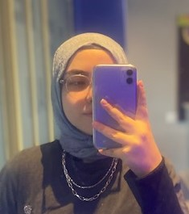

Kişisel Bilgilerim:
İsmim:
Merve Z. Yeşilbaş
Doğum Tarihim:
14.02.2007
Eğitim Gördüğüm Okullar:
- Ortaokul: İncek Sevgi Koleji
- Lise(1): Bilfen Çaayyolu Fen Lisesi
- Lise: Bilfen Çamlıca Fen Lisesi
- 2007-2012: Alaca-Çorum
- 2012-2022: Çankaya-Ankara
- 2022-?: Çamlıca-İstanbul
- Lego yapmak
- Gitar çalmak
- Müzik dinlemek
- Dizi izlemek
- Yazılım öğrenmek
Sevdiğim, yaparken kendimi iyi hissettiğim aktiviteler; hobilerim, hayatımda hep olsun istediğim şeyleri beni anlatan bu sayfanın en başına eklemek istedim:)


Gitar çalmak en sevdiğim aktivitelerdendir.Bir yıldan uzun süredir eğitim alıp klasik gitar çalarım.
Özellikle Türkiye'nin de dahil olduğu Dünya Ligi Voleybol Maçları'nı takip etmek sevdiğim kafa dağıtmak için sık sık başvurduğum bir aktivitedir.
Yaklaşık iki ay önce başlamış olduğum yazılım uzmanlığı eğitimime devam etmekteyim.Bu aktiviteye biraz kafa dağıtmak büyük çoğunlukla da gelecekteki bene şimdiden biraz yardım etmek için başladığım söylenebilir.
Müzik ; yolculukta, resim yaparken, ders çalışırken her zaman farklı türleriyle benimle beraber olan bir unsurdur.Odaklanmama yardımcı olur.
Günümüzde meslek sahibi olmak kadar doğru meslek seçimi de önemli.Ben de kesin bir karar için erken olsa da şimdiden bir şeyler de düşünmekte fayda var diyerek; sevdiğim, ilgi duyduğum, biraz da yatkın olduğum bazı alanlardan birkaç bölüm araştırdım.Sayfanın bu bölümü de bu bölümler hakkında.
Yazılım Mühendisliği:
Uluslararası Girişimcilik:
Hukuk:
Yazılım Mühendisliği, gelişen Dünya'da ileride öneminin çok büyük olacağı öngörülen her yıl daha da değerlenen aynı zamanda ilgi duyduğum bir bölüm.
Uluslararası Girişimcilik:
Uluslararası Girişimcilik Bölümü, Türkiye'de henüz yalnızca TOBB ETÜ Üniversitesi'nde bulunan yurt dışı kapısı, adından da anlaşılacağı gibi, çok açık bir bölüm.Yaratıcılığın ve dil bilmenin önemli olduğu bir bölüm.
Hukuk:
Hukuk Bölümü yukarıda bahsettiğim bölümlerden farklı görünse de, benim için avantaj ve dezavantajlarının şimdilik kafa kafaya olduğu bir bölüm.
Müzik dinlemek gibi sevdiğim bir başka şey de şarkı önermektir.Bir deneyin bakalım beğenecek misiniz şarkıları;)

Bana ulaşmak için iletişim kurabileceğimiz bir sosyal medya hesabınızı ve bana ulaştırmak istediğiniz mesajı forma yazmanız yeterli:)
(Sosyal medya hesaplarınızdan yalnızca birini yazmanız yeterli:))
(Sosyal medya hesaplarınızdan yalnızca birini yazmanız yeterli:))